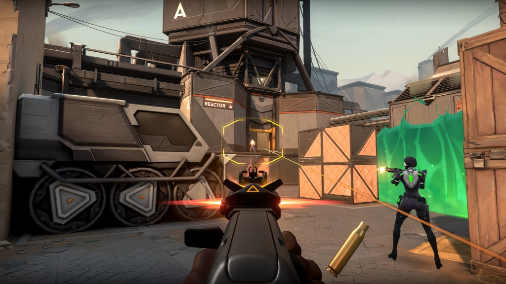
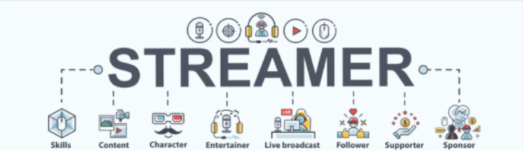

Game Streaming
What is Game Streaming?
Game streaming is an activity where people broadcast themselves playing games live on online platforms. This has become popular during the mid-2010s when facebook and youtube were still growing.
What is Valorant?
"Valorant is a team-based first-person hero shooter set in the near future. Players play as one of a set of agents, characters designed based on several countries and cultures around the world.

In the main game mode, players are assigned to either the attacking or defending team with each team having five players on it. Agents have unique abilities, each requiring charges, as well as a unique ultimate ability that requires charging through kills, deaths, orbs, or spike actions. Every player starts each round with a "classic" pistol and one or more "signature ability" charges. Other weapons and ability charges can be purchased using an in-game economic system that awards money based on the outcome of the previous round, any kills the player is responsible for, and any actions taken with the spike.
he game has an assortment of weapons including secondary guns like sidearms and primary guns like submachine guns, shotguns, machine guns, assault rifles and sniper rifles. There are automatic and semi-automatic weapons that each have a unique shooting pattern that has to be controlled by the player to be able to shoot accurately. Different agents allow players to find more ways to plant the Spike and style on enemies with scrappers, strategists, and hunters of every description. It currently offers 16 agents to choose from. They are Brimstone, Viper, Omen, Cypher, Sova, Sage, Phoenix, Jett, Raze, Breach, Reyna, Killjoy, Skye, Yoru, Astra, and KAY/O."
Viewer Analysis on Valorant Players
How many people watch gameplays and play Valorant
Valorant currently has around 14 million players, as Riot Games have stated and based on Statista.com "In January 2021, the game's global viewership reached more than 61 million hours watched across leading live streaming platforms, an increase of 27 percent compared to the previous month. In March 2021, Valorant was among the most streamed games on Twitch, with 3.26 million hours streamed on the platform worldwide."
What is the percentage of male and female
According to head of esports partnerships Matthew Archambault, it is estimated that around 40% of valorant players are female
Age groups of Valorant players
Video games are played by many age groups from teens to adults, that said the youngest active player in Valorant is supposedly 15 years old while the oldest active player is 32 years old
Top 5 countries playing valorant
| United States | 22.53% |
| Brazil | 6.72% |
| Turkey | 6.22% |
| Philippines | 5.73% |
| Indonesia | 4.00% |
The Need of Game Stream Viewers
We discussed why many people watch livestream gaming and game reviews. Using the methods 5 whys, and What-How-Why, we are able to know that many people stream gaming content because of the entertainment of the game and watching their favorite gamer do entertaining stuff. The gaming industry and culture has been hugely affected by gaming streaming because many people watch and make the game more known and popular, especially games that are worldwide
Characteristics of A Good Stream
Why is the streamer’s behavior important?
Streaming is where we frequently interact to our viewers and audiences whilst sharing thats why it's important to note certain behaviors, so what are exactly good behaviors of a good stream? here are the few factors to determine this:
The most important factor when it comes to streaming is the streamer’s behavior. The reasons or motivations why a streamer decides to go live, The obvious goal for some is to achieve growth or income. In this situation they mostly stream to have fun and to enjoy themselves. Respect, Another one is respecting your audience. This means that to be able to properly say farewell for those who don’t want to work with you. Consistency, This is also a big part of the characteristics of a good stream as it includes the frequency of streaming, flow of stream content, and good/behavior. A streamer's consistency is a big point that ecompasses a lot of aspects of streaming.
It is also important to control the chat environment while streaming, to remove toxicity in the stream. The type of chat environment that cumulates into a stream is ultimately dictated by the streamer and how he/she directs the chats. The streamer’s behavior is important because the viewers, especially children, that are watching the streamer, might copy the streamer’s behavior or attitude, and if the streamer showed an unsightly attitude, then they could be marked as a potential bad influence to the audience.
Why is interaction between the audience and the streamer important?
Good stream interaction allows viewers to take control of what they want to know during a live streaming session. Instead of guessing at what the audience wants, Streamers can use interactive chats, love polls, and smart click maps to put the viewers in control and because viewers are an active part of the program, they are more apt to remain engaged and learn about a product or service. Another important consideration is the chat environment of a streamer as previously mentioned, This can show the bond and how close the streamer is from his/her viewers. In a way, you will encounter some that you can not get along with regardless of who the streamer is, and it is the best if the general chat environment is inclusive.
The interaction between the audience and streamer is important because it shows that the streamer cares for its viewers and what they want to see in the current stream or the next stream and also creates a positive community between the streamer and audience.